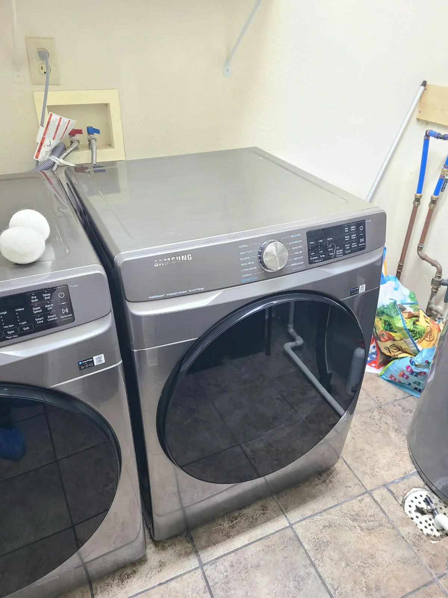
The Service Call: The Drum Would Not Start
A customer in Fishers, Indiana, contacted Alex Appliance Repair because their Samsung dryer would not begin drying. The complaint was that the drum would not start turning and the heated drying cycle would not begin.
We opened the dryer and inspected the drive system. The drive belt was broken, and the idler pulley also required replacement. Lint was present inside the appliance. The completed work included a new belt, a new idler pulley and internal cleaning, including the blower wheel.

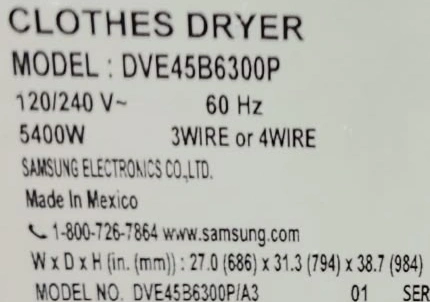
Verified Model: Samsung DVE45B6300P/A3
The original label identifies this electric dryer as Samsung DVE45B6300P/A3. The crop preserves the photographed model marking so readers can identify the appliance covered by this repair.
When requesting service, share the dryer model and describe what happens when Start is pressed. A drum that does not turn is a useful detail to mention alongside whether the controls respond and whether a drying cycle begins.
A Broken, Fraying Drive Belt
The removed belt shows extensive damage: loose strands, split ribs and separated sections are visible in the service photographs. The technician confirmed that the belt was broken. A broken belt cannot transfer the motor’s movement to the drum, making the drive system a key finding in this no-start complaint.

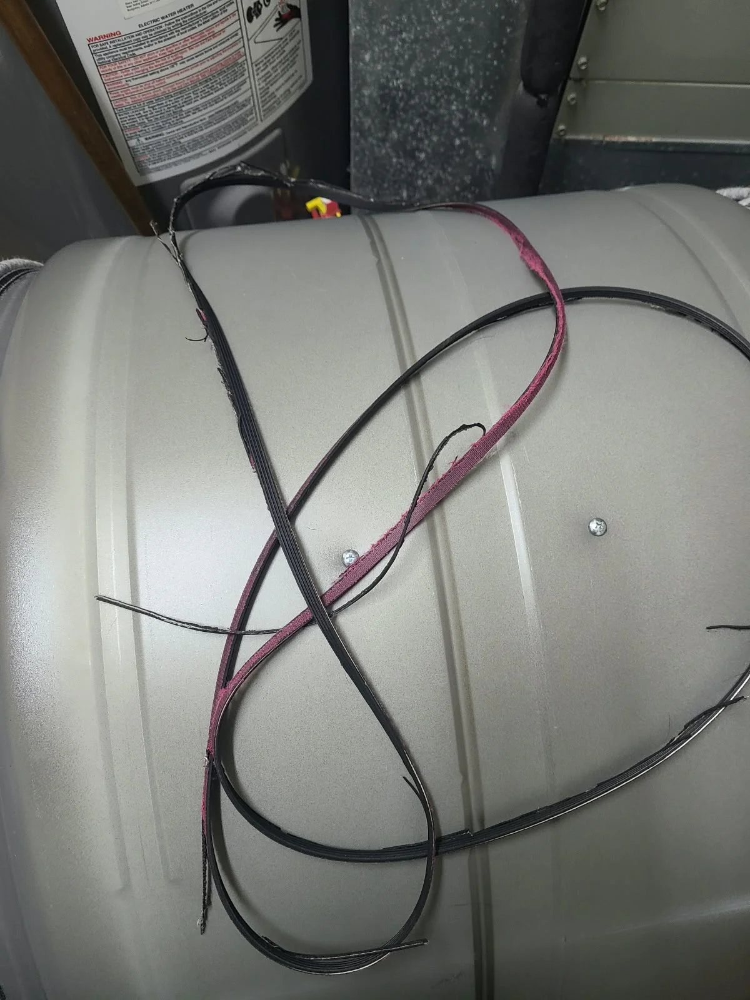

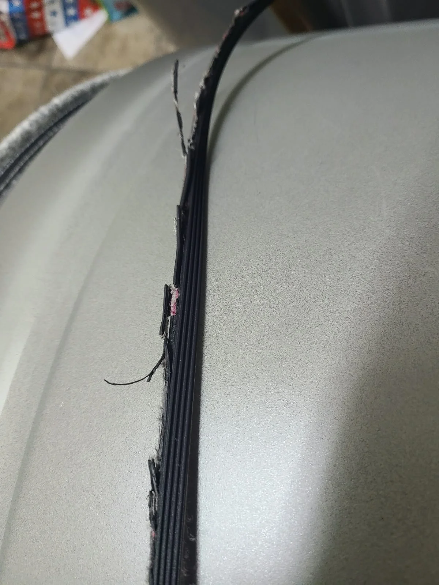
The repair addressed the belt and the idler pulley together. The pulley needed replacement during this visit; the job notes do not establish the original cause of the belt failure.

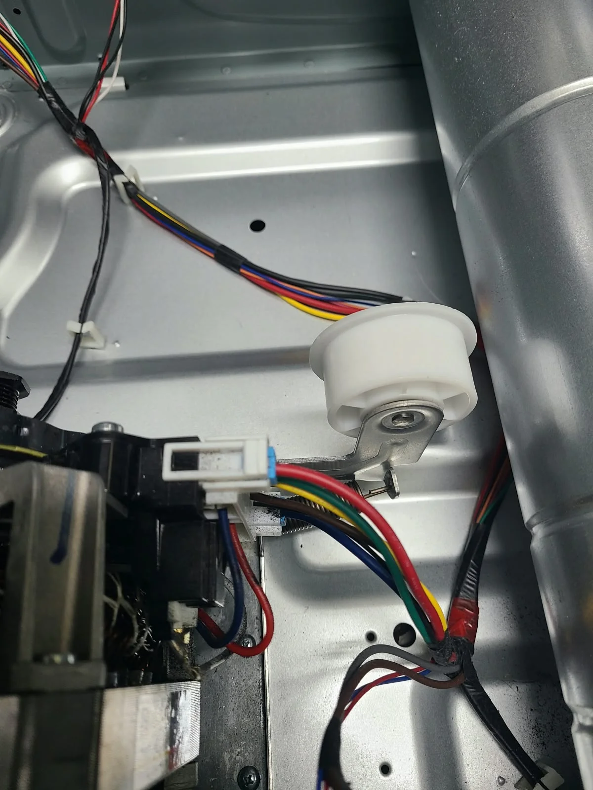
Installing the New Idler Pulley
We installed a new idler pulley, the component that maintains tension in the drum drive belt. The photograph shows the replacement in position beside the motor with the drum removed.
The idler is separate from the drum support rollers. The replacements documented in this repair were the drive belt and the idler pulley. The supplied assembly diagram in the overview shows those drive components as a reference.

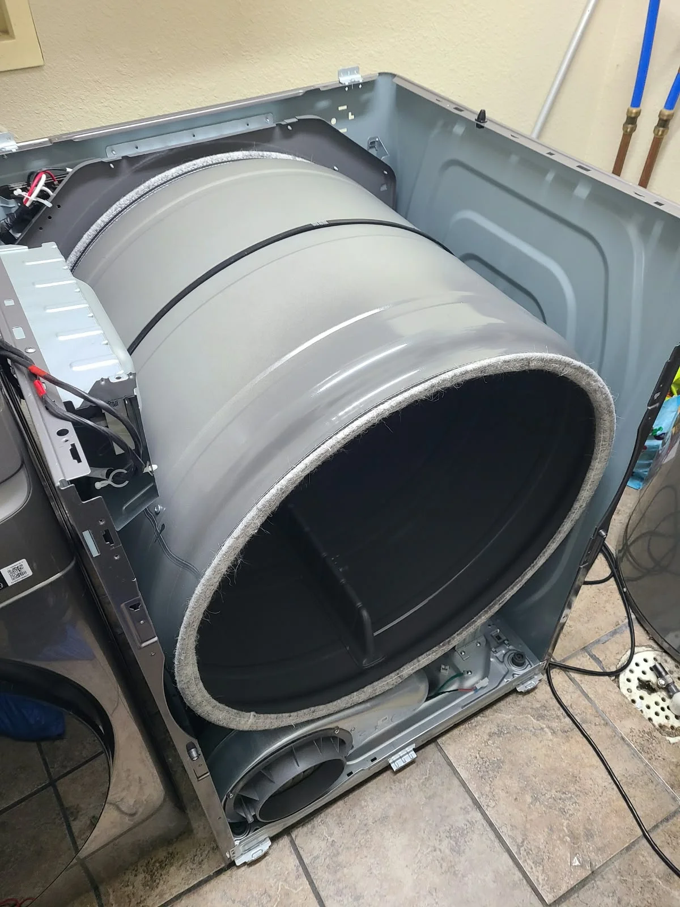
Fitting the Replacement Drive Belt
A new drive belt was installed around the drum, and the drum was returned to the cabinet during reassembly. This photograph shows the belt around the drum while the dryer was still open.
The customer’s report that heated drying would not begin was part of the same service request. The documented repair concerned the drive system; a no-start symptom alone does not establish a failed heating element.
Cleaning the Blower Wheel
With the dryer open, we removed accumulated lint and cleaned the blower wheel. The first photograph shows deposits on the wheel and around the housing opening. The second shows those areas after cleaning.

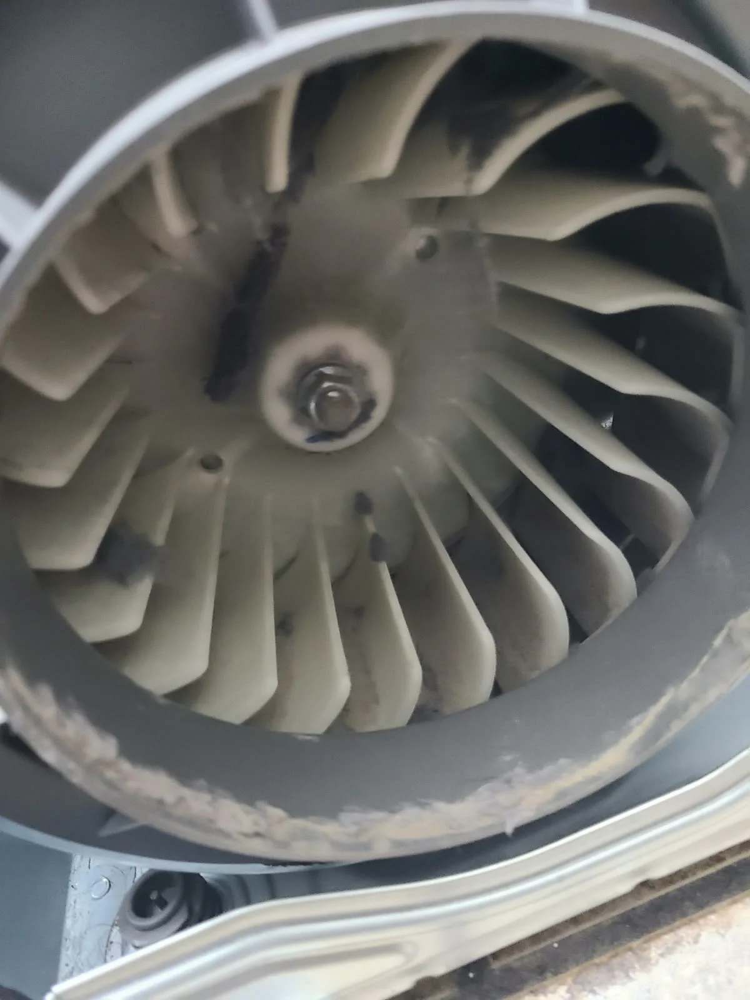

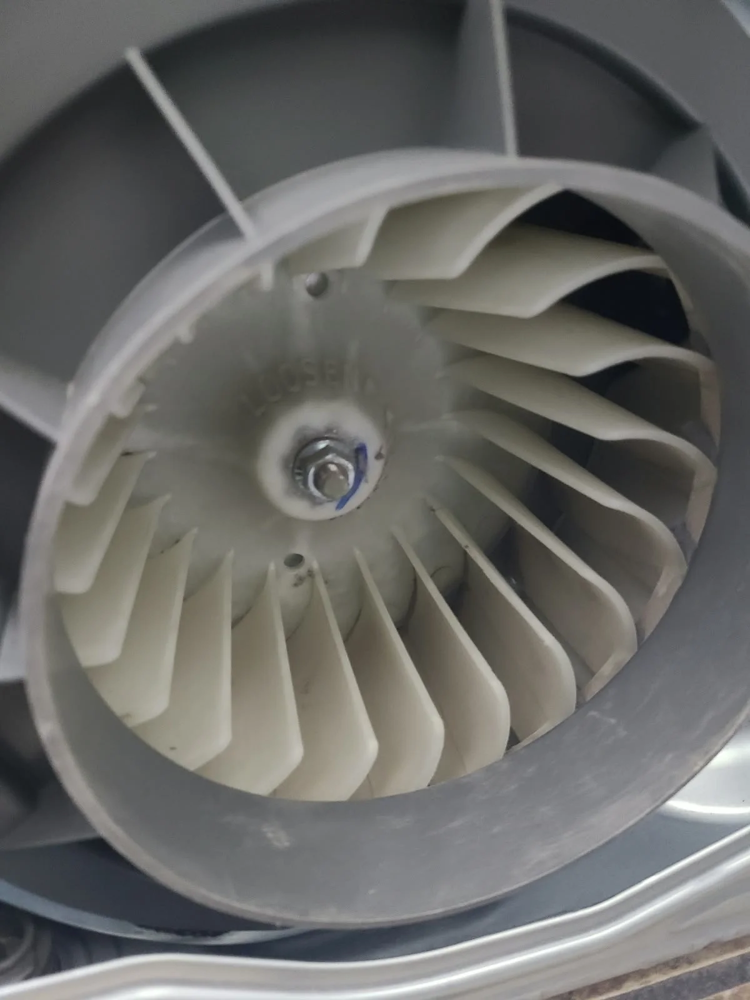
The blower moves air through the dryer. Cleaning it was part of this service alongside the belt and tensioner replacement. These photographs document work inside the appliance.
Removing Lint from the Front Air Passage
The removed front lint-duct housing also contained lint. Opening the assembly made the deposits accessible for cleaning. The paired photographs show the same area before and after the accumulated material was removed.

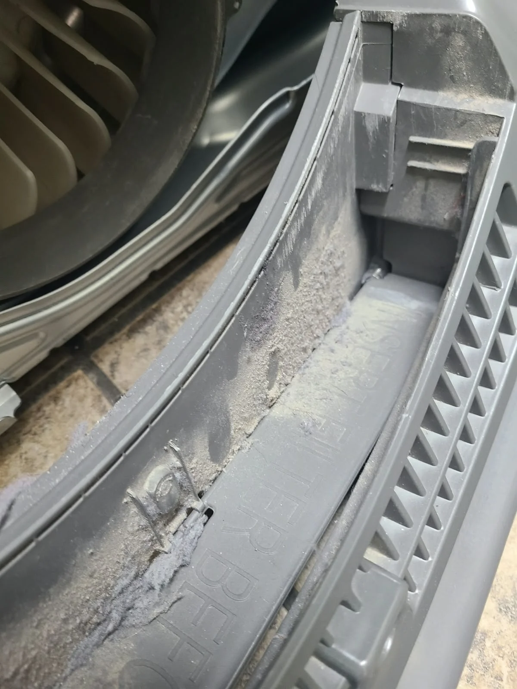

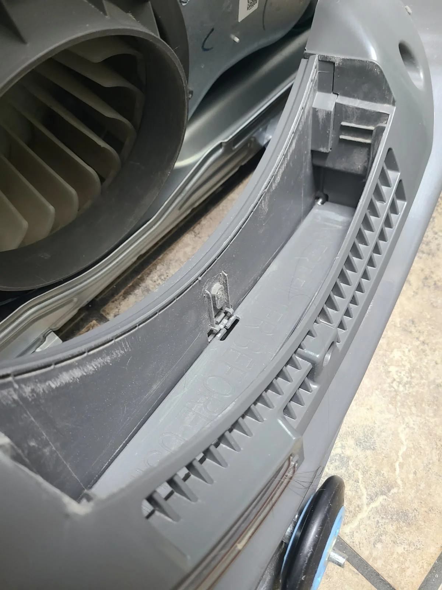
The internal cleanup covered the accessible dryer components. The work described here concerns the appliance interior and its accessible air passages.
Cleaning Behind the Front Panel
Lint had collected along the inside bottom edge of the front panel as well. It was removed while the panel was off the dryer. This before-and-after pair records another part of the internal cleaning completed during the visit.

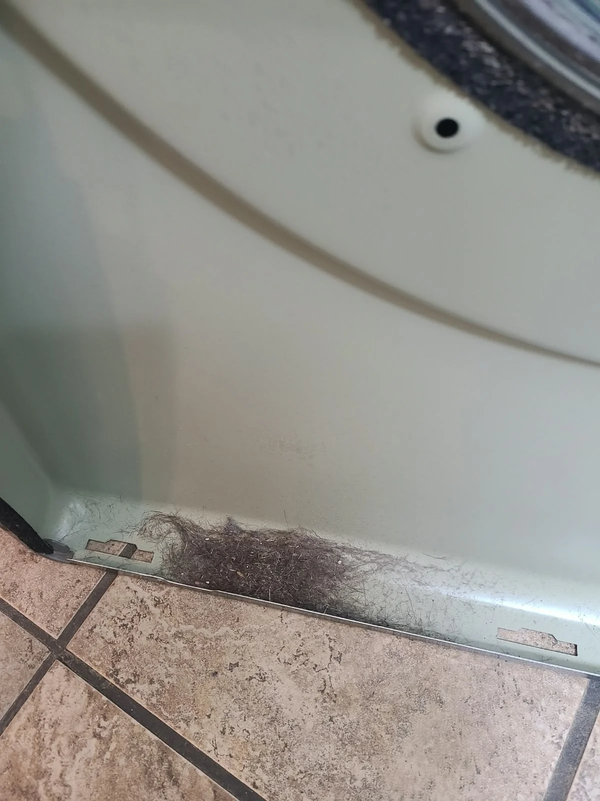

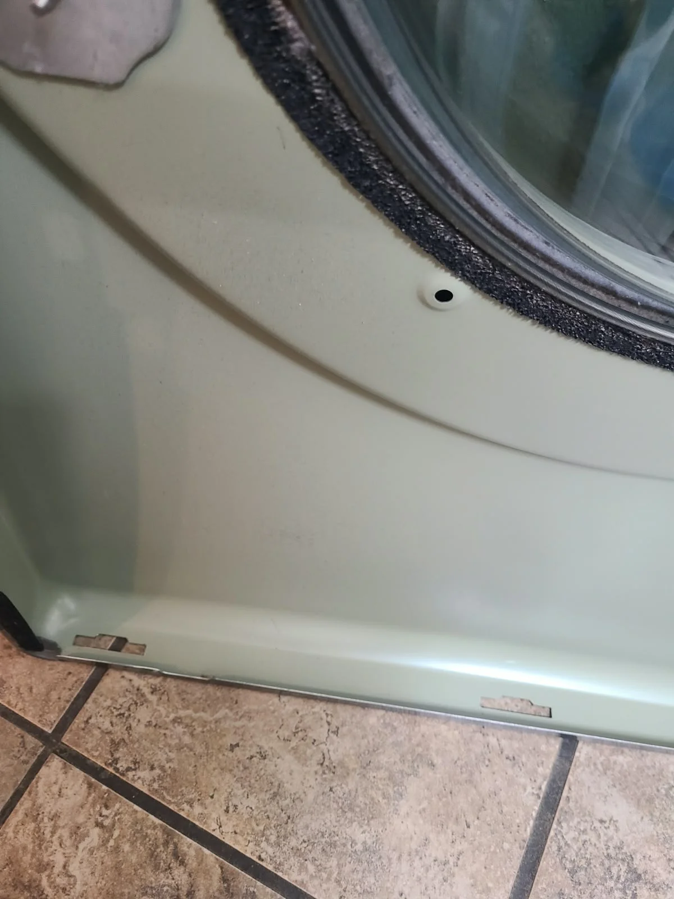
Access for the drive repair made it possible to reach these hidden areas. The cleaning and component replacement were completed before the removed assemblies were put back in place.

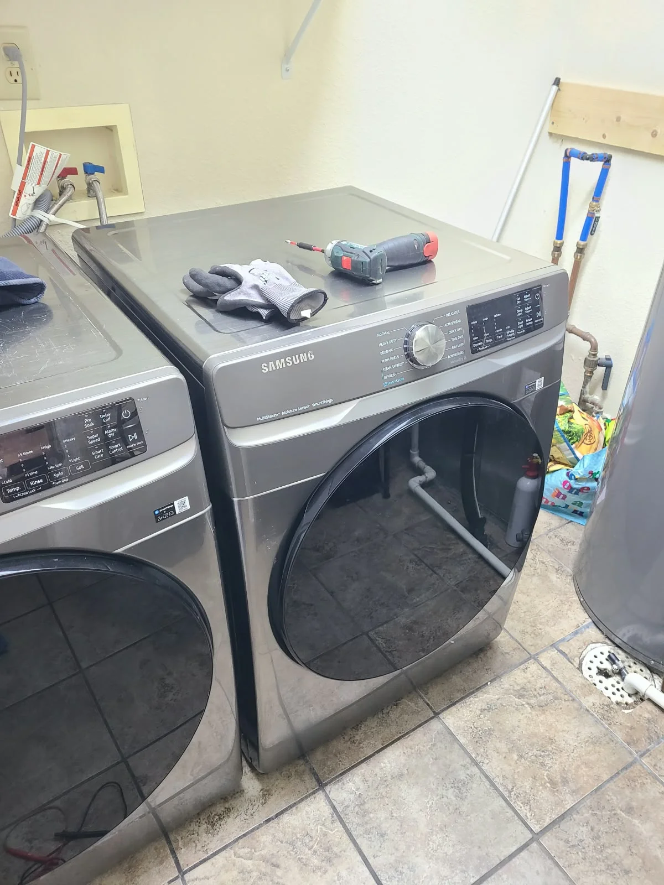
The Completed Repair
The dryer was reassembled following installation of the new drive belt and idler pulley. The service also included internal lint removal, blower-wheel cleaning and cleaning of the accessible front air passage and panel.
The final photograph shows the assembled Samsung dryer at the Fishers service location. The earlier photographs document the damaged belt, replacement components and cleaning work that formed this repair.
Samsung Dryer No-Start Questions
Can a broken belt stop the drum from turning?
Yes. The belt transfers movement from the motor to the drum. This dryer had a confirmed broken belt, which was replaced during service.
What does the idler pulley do?
It keeps tension on the drive belt. The idler pulley on this Samsung dryer needed replacement and was renewed with the belt.
Does a dryer that will not start always need a heating element?
No. This job involved a broken belt and an idler pulley replacement. The appliance needs diagnosis before deciding which components require repair.
Was the blower cleaned?
Yes. The blower wheel and accessible internal areas were cleaned, with the work documented in the before-and-after photographs.
Samsung Dryer Repair in Fishers, Indiana
If your Samsung dryer drum will not turn or the drying cycle will not start, contact Alex Appliance Repair for dryer repair in Fishers. Share the model and symptoms when requesting an appointment.
Explore our Samsung appliance repair services, Fishers service coverage and more repair stories with original service photographs. Alex Appliance Repair is an independent appliance repair service operated by Aksenov LLC.
Call (463) 248-8429 or book service online.
Book dryer repair in Fishers